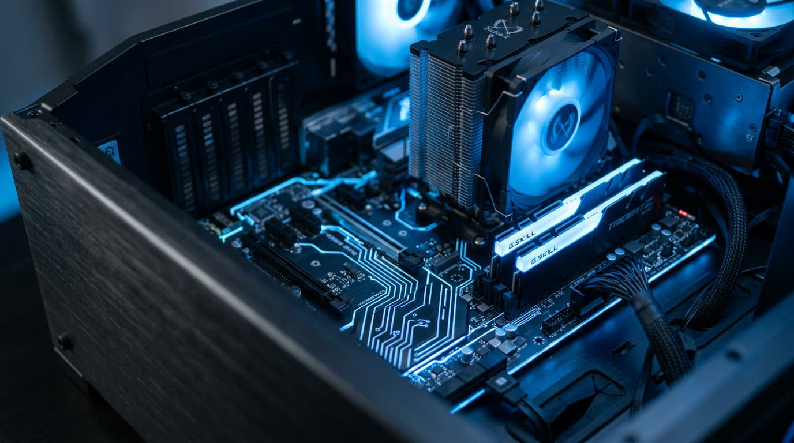

Componentele principale
Un calculator funcționează după schema intrare → prelucrare → memorare → ieșire. Fiecare componentă are rolul ei.
Procesor (CPU)
Unitatea centrală de prelucrare. Se caracterizează prin frecvență (GHz) și număr de nuclee.
Memorie RAM
Memorie de lucru, volatilă. Mai multă RAM = mai multe programe deschise fără încetinire.
Stocare
HDD (magnetic, mai ieftin) sau SSD (fără piese mobile, mult mai rapid). Capacitate în GB/TB.
Placa video (GPU)
Prelucrează imaginile. Integrată în procesor sau dedicată, pentru jocuri și grafică 3D.
Așa arată în realitate
Privește fotografia unei unități centrale deschise. Câte componente recunoști?

Turnul metalic cu ventilator
Este coolerul procesorului. Procesorul se află sub el și se încălzește în timpul lucrului.
Cele două plăcuțe luminoase din dreapta
Sunt modulele de memorie RAM, montate în sloturile de lângă procesor.
Fantele lungi din stânga jos
Sunt sloturile PCIe, în care se montează placa video sau alte plăci de extensie.
Mănunchiul de cabluri împletite
Sunt cablurile sursei de alimentare, care duc curentul la placa de bază.
Periferice de intrare și de ieșire
Intrare
Tastatură, mouse, microfon, cameră web, scanner, touchpad.
Ieșire
Monitor, imprimantă, boxe, căști, videoproiector.
Intrare/ieșire
Ecran tactil, stick USB, imprimantă multifuncțională, placă de rețea.
Verifică-te
Ce se întâmplă cu datele din RAM la oprirea calculatorului?
Se pierd, deoarece RAM-ul este o memorie volatilă.
De ce pornește mai repede un laptop cu SSD decât unul cu HDD?
SSD-ul nu are piese mecanice și citește datele de câteva ori mai repede.
Ecranul tactil este periferic de intrare sau de ieșire?
De ambele tipuri: afișează imaginea și preia atingerile.